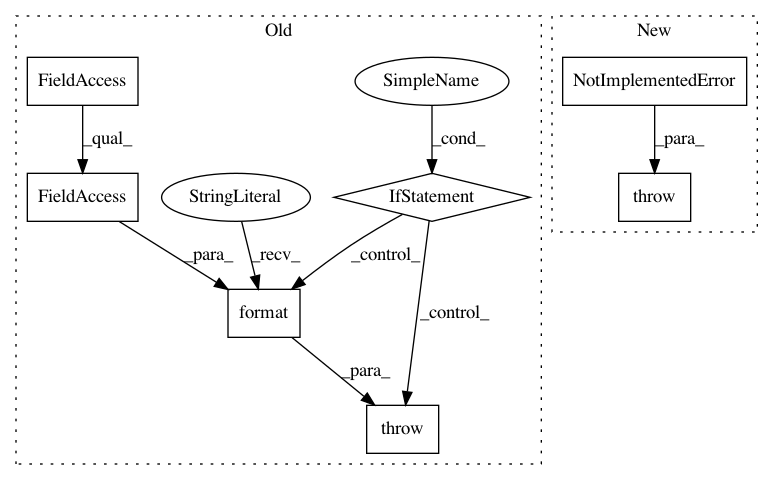

1b7eb4148747bd674e15adfa1b3851f0406c356d,pixyz/losses/entropy.py,StochasticReconstructionLoss,__init__,#StochasticReconstructionLoss#Any#Any#Any#,130
Before Change
if input_var is None:
input_var = encoder.input_var
if not(set(decoder.var) <= set(input_var)):
raise ValueError("Variable {} (in the `{}` class) is not included"
" in `input_var` of the `{}` class.".format(decoder.var,
decoder.__class__.__name__,
encoder.__class__.__name__))
loss = -decoder.log_prob().expectation(encoder, input_var)
super().__init__(loss)
After Change
class StochasticReconstructionLoss(SetLoss):
def __init__(self, encoder, decoder, input_var=None):
raise NotImplementedError("This function is obsolete."
" please use `-decoder.log_prob().expectation(encoder)` instead of it.")
In pattern: SUPERPATTERN
Frequency: 3
Non-data size: 7
Instances
Project Name: masa-su/pixyz
Commit Name: 1b7eb4148747bd674e15adfa1b3851f0406c356d
Time: 2020-01-19
Author: kaneko@weblab.t.u-tokyo.ac.jp
File Name: pixyz/losses/entropy.py
Class Name: StochasticReconstructionLoss
Method Name: __init__
Project Name: brian-team/brian2
Commit Name: cf549e81df04f14177d449be4ffee3f56222acd4
Time: 2017-10-27
Author: marcel.stimberg@inserm.fr
File Name: brian2/stateupdaters/GSL.py
Class Name: GSLContainer
Method Name: get_codeobj_class
Project Name: masa-su/pixyz
Commit Name: 99a7406291265397b453ffb7f7c148e58ed68f47
Time: 2020-01-13
Author: kaneko@weblab.t.u-tokyo.ac.jp
File Name: pixyz/losses/entropy.py
Class Name:
Method Name: StochasticReconstructionLoss